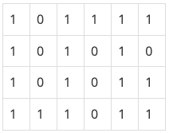

BOJ
DFS/BFS 2178 미로 탐색
문제
N×M크기의 배열로 표현되는 미로가 있다.

미로에서 1은 이동할 수 있는 칸을 나타내고, 0은 이동할 수 없는 칸을 나타낸다. 이러한 미로가 주어졌을 때, (1, 1)에서 출발하여 (N, M)의 위치로 이동할 때 지나야 하는 최소의 칸 수를 구하는 프로그램을 작성하시오. 한 칸에서 다른 칸으로 이동할 때, 서로 인접한 칸으로만 이동할 수 있다.
위의 예에서는 15칸을 지나야 (N, M)의 위치로 이동할 수 있다. 칸을 셀 때에는 시작 위치와 도착 위치도 포함한다.
입력
첫째 줄에 두 정수 N, M(2 ≤ N, M ≤ 100)이 주어진다. 다음 N개의 줄에는 M개의 정수로 미로가 주어진다. 각각의 수들은 붙어서 입력으로 주어진다.
예제 입력
"""
case 1:
입력
4 6
101111
101010
101011
111011
출력
15
case 2:
입력
2 25
1011101110111011101110111
1110111011101110111011101
출력
38
"""풀이
bfs로 접근을한다. (0,0) 시작 위치에서 상,하,좌,우를 탐색해서 1이라면 시작 위치의 값을 더해준다. 이를 반복하면 시작위치에서 5 떨어져 잇는 곳은 5가 저장되어있다. 모든 그래프를 이 방식으로 새로 그려주면 마지막 도착위치인 (n-1,m-1)위치에 시작 위치로 부터의 거리가 저장되어 있다.
solution
- 해당 문제에서는 visited 리스트를 사용하지 않는다.
- bfs 함수 인자로 시작 위치 x, y 좌표를 보내준다.
- 현재 위치에서 상,하,좌,우를 탐색할 수 있는 dx, dy 리스트를 정의해준다.(for문으로 현재 x와 y에 계산해줄 것임)
- queue에 현재 위치 set 형식으로 삽입하고 while문을 돈다.
- queue에서 현재 위치 x, y를 꺼내주고 상,하,좌,우를 탐색한다.
- 탐색시 범위를 벗어나면 continue 해준다.
- 상,하,좌,우 에서 1을 만나면 현재 위치의 값을 더해주고 해당 값을 큐에 삽입해준다.
코드
from collections import deque
def bfs(x, y, graph):
dx = [0, 0, 1, -1]
dy = [1, -1, 0, 0]
queue = deque()
queue.append((x,y))
while queue:
x, y = queue.popleft()
for i in range(4):
nx = x + dx[i]
ny = y + dy[i]
if nx<0 or nx>=n or ny<0 or ny>=m:
continue
elif graph[nx][ny] == 1:
graph[nx][ny] += graph[x][y]
queue.append((nx,ny))
if __name__ == "__main__":
n, m = map(int, input().split())
graph = []
for _ in range(n):
graph.append(list(map(int,input())))
bfs(0,0, graph)
print(graph[n-1][m-1])